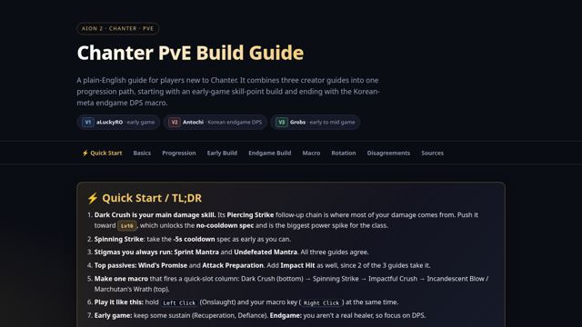
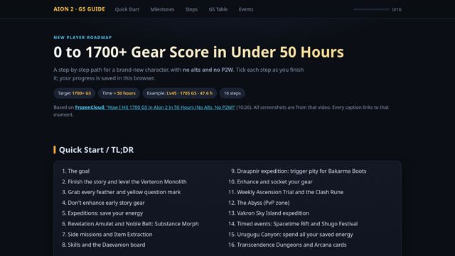
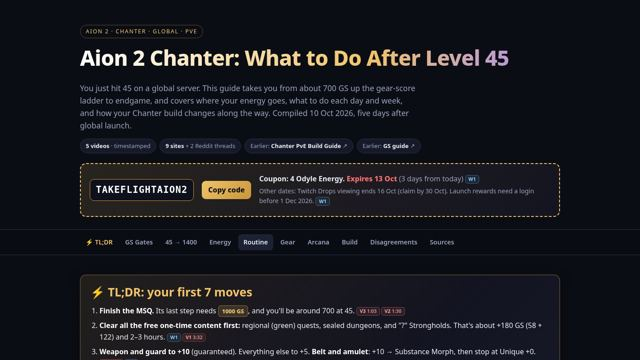
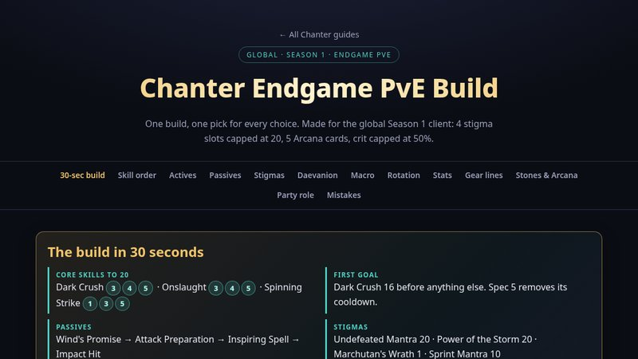

Build
Chanter PvE Build
Skills, stigmas, macro setup and rotation from early game to endgame.
Open guide →
Gear score
0 to 1700+ GS
A 16-step checklist with screenshots for pushing gear score fast without paying.
Open guide →
Progression
After Level 45
GS roadmap, daily and weekly checklists, energy plan and endgame Chanter changes.
Open report →
Endgame
Chanter Endgame PvE Build
One definitive global Season 1 build: skill order, specs, stigmas, macro, stats, gear lines and party role.
Open guide →